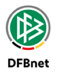

Deine Hilfe rund ums Spiel
DFBnet. Klar sortiert.
Wähle dein Thema – kurze Schritte zuerst, Erklärungen bei Bedarf.

Dein Spiel dokumentieren
Deine Einsätze organisieren
Hintergrundwissen
Sperrtermin
Du stehst als Schiedsrichter in einem Zeitraum nicht zur Verfügung.
Spielersperre
Eine sportrechtliche Einschränkung für eine betroffene Person – ein anderes Thema.
Welche Anwendung ist wofür da?
- Spielberichte: dein Spiel dokumentieren.
- Schiriansetzung: Ansetzungen und eigene Verfügbarkeit verwalten.
- Schiri-Beobachtung: Beobachtungsdaten im Rahmen deiner Berechtigung.
Nicht jede Kennung sieht dieselben Menüs. Diese vereinsinterne Hilfe ist kein offizielles DFBnet-Angebot und übernimmt keine Änderungen in deinem DFBnet-Konto.
Offizielles DFBnet öffnen ↗